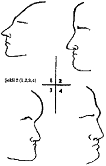

Ara ş t ı rma Serisi No.13
¯¯¯¯¯¯¯¯¯¯¯¯¯¯¯¯¯¯¯¯¯¯¯¯¯¯¯¯¯¯¯¯¯¯
21
Yüz Okuma Sanat ı
¯¯¯¯¯¯¯¯¯¯¯¯¯¯¯¯¯¯¯¯¯¯¯¯¯¯¯¯¯¯¯¯¯¯
4. BÖLÜM
KOLAY F İ ZYOGNOM İ NOTLARI
İ nsan yüzünün a ş a ğ ı daki ay ı rt edici çizgileri, ayr ı ca özgün bak ı ş ifadeleri o insan ı n çe ş itli yetenek ve e ğ ilimleri hakk ı nda fikir yürütmeye olanak sa ğ l ı yor.
Al ı n
Al ı n ( Ş ekil l, No. 1) - enerjik, gaddar, suç i ş lemeye yatk ı n, a ş a ğ ı l ı k içgüdüleri güçlü.
Geni ş ve kö ş eleri kabar ı k al ı n ( Ş ekil l, No. 2) - hayal gücü kuvvetli.
Hilal ş ekilli al ı n ( Ş ekil l, No. 3) - dar kafal ı , burnunun ucundan ötesini göremeyen, rutin, yetenekleri az, gizli yetersizliklere sahip.
Enli ve yüksek al ı n ( Ş ekil l, No. 4) - çok ak ı ll ı .
Devrik piramit ş ekilli al ı n ( Ş ekil 2, No. 1) - melankolik- kurnaz, yalanc ı , aptal, bencil ve serserili ğ e yatk ı n.

Dörtgen ş ekilli al ı n ( Ş ekil 2, No. 2) - alçak gönüllülük.
A ş ı r ı kabar ı k al ı n ( Ş ekil 2, No. 3) - öfkeli, dar kafal ı , günlük ya ş am ı nda pratik.
"Müzik bölgesi" kabar ı k olan al ı n ( Ş ekil 2, No. 4) - do ğ u ş tan müzik yetene ğ ine ve zengin iç dünyaya sahip.
Dar, ensiz ve geriye do ğ ru bas ı k al ı n -muhakeme gücü zay ı f. Sert ve ortas ı kabar ı k al ı n- so ğ ukkanl ı , a ğ ı rba ş l ı , sa ğ duyulu. Düz ve ensiz al ı n - aç ı k kalpli, hay ı rsever, saf.
A ş ı r ı geli ş mi ş al ı n - ufku geni ş , gözlemleme yetene ğ ine sahip. A ş ı r ı büyük al ı n - tembellik ve hareketsizlik.
__________________________________________________________________
© WWW.MAXIMUMBILGI.COM